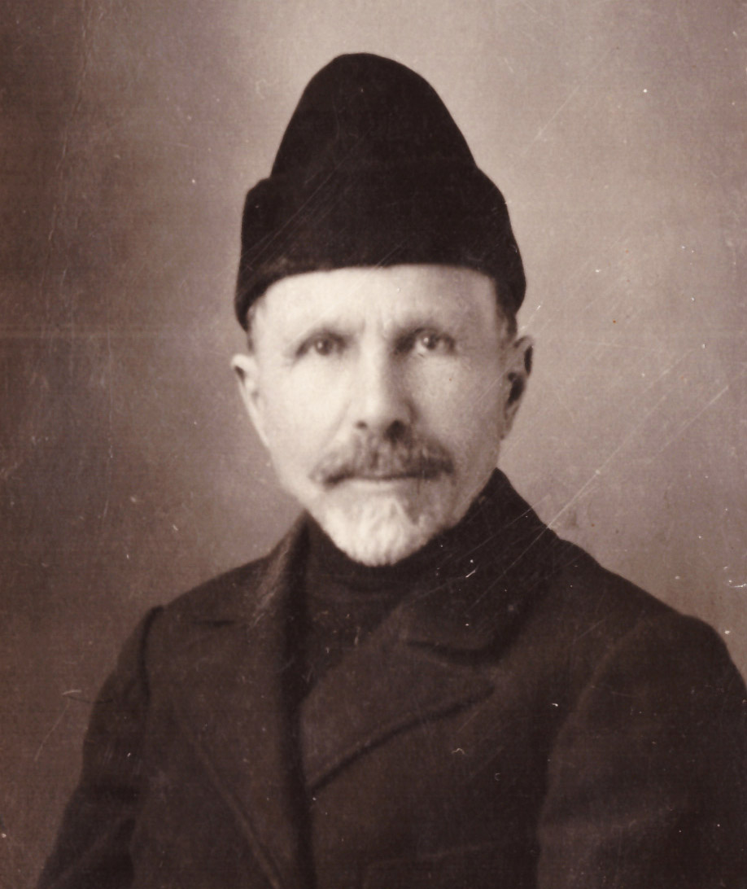

«В жизни всё не вечно». Это относится и к человеку. Живёт, в чём-то приносит людям пользу, а потом после себя оставляет след. Каков он – судить семье и людям. Писатель обычно одну из своих повестей превращает в автобиографическую. А я взял из песни слова «мои года – моё богатство» и решил их наполнить своим жизненным путём, пусть и кратко. Пишу о том, что касается меня и нашей семьи Осиных, продолженной моими дочерями и внуками.
О своих деде и бабушке (умерших в 1916 и 1913 гг. соответственно) я частично знал от старшей сестры Нюры 1905 г.р., что-то рассказывала тётя Наташа, а больше всего рассказал тот самый лоцман – он был родом из соседней деревни Девкина Гора и рос вместе с моим отцом, его братьями и сёстрами. Видел, как живут дети Аверкия Фёдоровича, моего деда по отцу. А зимой часто бывал на базаре в деревне Окулиха, где жили Сентюлёвы.
Верхняя Окулиха, начало 20 века
Базар в Окулихе | Верхняя Окулиха весной |
|
| Моя мать Ефросинья Николаевна родилась в 1882 году в деревне Первуниха, что недалеко от Пучежа по Нижегородскому тракту, рядом с Волгой. Она имела девичью фамилию Скворцова. В их очень бедной крестьянской семье было шестеро детей: четыре сестры - Евдокия, Мария, Дарья и Ефросинья и два брата - Иван и Павел. Родители умерли, и дети осиротели. Местный водовоз Пётр Васильевич Сентюлёв с женой Анной Николаевной были бездетными, и взяли к себе на воспитание парня и девушку. Выбор деда пришёлся на Павла и кудрявую, похожую на цыганочку Фроню. И оба приёмыша стали носить фамилию Сентюлёвы и отчества Петрович и Петровна. Бабушка Анна приняла их в семью доброжелательно. Да и знавшие характер Сентюлёвых люди говорили, что те были добрыми и внимательными к своим приёмным детям. К сожалению, дед Пётр потерял своего помощника по хозяйству. Когда Павлу исполнилось 17 лет, его призвали на русско-японскую войну 1904-05гг., где он и погиб. Медаль «За храбрость», оставшаяся от молодого солдата, хранится теперь у нас.
|
Пучеж. Водовоз | Медаль "За храбрость" |
Ефросинье, когда её взяли в семью Сентюлёвых, было 12 лет. Девушка была очень работящая и помогала приемной матери по хозяйству. А хозяйство было солидное. Они содержали двух лошадей, так как возить с утра до вечера воду с Волги в бочке, а тем более в гору, одной лошадью было очень тяжело. Кроме лошадей были корова с тёлкой. Тёлку ежегодно выращивали до дойного состояния, а потом решали – оставить, резать на мясо или продать. Также имели до 30 кур и выращивали – до осени – свинью. В некоторые года держали 2-3 овец. Помимо всего этого было два огорода и ещё в поле выращивали рожь, ячмень и овёс на корм лошадям и курам. Овёс к тому же на мельнице перемалывали в муку и варили кисель – с молоком или с льняным маслом. Одно время сеяли и лён-кудряш на масло (урожай бывал до 10 центнеров с гектара) – масло, готовившееся на маслобойне, было с приятным запахом и вкусом. Поле обрабатывал сам дед и работники, нанятые за 1/3 урожая. На 20 сотках выращивали много картофеля и овощей. Огурцы, помидоры и капусту солили в бочках, а морковь хранили в песке, в особой яме. Часть урожая продавали.
Фроня очень уставала, занимаясь домашним хозяйством – это подтверждали их соседи. Пётр Васильевич, оценив трудолюбие и порядочность своей приёмной дочери, решил выдать её замуж за Дмитрия Аверьяновича Осина, который был на 9 лет старше невесты. Лоцман «дядя Коля» рассказал мне, что свадьбу шикарно сыграли зимой 1900г. Дед не столько сам был богат на подобные расходы, сколько ему помогло купечество, а особенно семья братьев Перевозчиковых – как деньгами, так и угощениями. Тем более что Фроня ранее часто готовила для гостей самих Перевозчиковых. Стряпать она любила и умела, научившись этому у приёмной матери. Родня была многочисленная – с трудом уместились за столы на обоих этажах дедовского дома. Молодые стали жить на втором этаже, а бабушка с дедушкой – на первом. Пётр Васильевич поставил перед зятем вопрос о строительстве собственного дома, в чём обещал оказать помощь. По сносной цене Дмитрию Аверьяновичу отпустили лес и другие материалы лесопромышленники, для которых он более 10 лет плотил и сплавлял брёвна. Конечно, помогла и льнопрядильная фабрика, на которой он работал. Как и обещал, большую помощь в строительстве дома, двора к нему, кладовки и сарая для дров оказал дед.
Пучеж. Льнопрядильная фабрика |
Сейчас я жалею, что не узнал от мамы и сестры больше о дедушке и бабушке Сентюлёвых. Говорили, что дед был «басурман», и связано это вот с чем. Летние и зимние повозки с бочкой у деда были окованы железом для прочности. В базарные дни приезжало очень много подвод и пробраться между ними с бочкой было трудно, в результате чего дед их задевал. Мужики бросались на него с топорами, крича: «Ну, Петька, тебе башки не сносить!». А он брал свой черпак (ведро на длинной палке) и начинал им размахивать. Очень был физически сильный и никого не боялся. Был к тому же очень экономный. Каждый день привозил домой продуктов и гостинцев внучке Нюре.
|
 | Мой отец Дмитрий Аверьянович Осин родился в 1873 году от матери Прасковьи, которая умерла в 1876г., оставив мужу четверых сыновей: Афанасия (1868г.р.), Владимира (1870г.р.), Дмитрия (1873г.р.) и Василия (1874г.р.). Деду Аверкию (или Аверьяну, как все его звали, и как он значился по документам) было трудно с ребятами, хотя все парни были послушными. Ухаживать за ними деду помогала соседская женщина, которая постепенно привыкла к детям, а они к ней – и Аверкий на ней женился в 1877 году. И потом у них стали рождаться дети, причем одни девочки: Евгения (1878г.р.), Мария (1880г.р.), Прасковья (1881г.р.), Александра (1883г.р.). Как видно, обстановка в семье стала ещё тяжелее, разница по возрасту между детьми достигала 15 лет. Нелегко было вести хозяйство и кормить такую семью. Но и сам Аверкий, и обе его жены были очень работящими. Помогали им и родственники, и соседи. Семья была дружная, работящая, все парни были трезвенниками (разве что к престольным праздникам бражки наварят). Дети, подрастая, включались в крестьянский труд, что затем передавали и своим потомкам.
|
Хозяйство было такое, что рабочие руки требовались: одна лошадь обязательно с жеребёнком, корова с тёлкой (в деревне считали, что лошадь и корова даёт больше пользы, если рядом подрастает их потомство), до 10 овец. В поле выращивали рожь озимую, овёс, клевер, ячмень, горох, лён (на масло), заготавливали сено. Была земля у дома под огород – частично сад: 2-3 яблони, 2-3 куста вишни, терновник, смородина, немного крыжовника, малина, горох и бобы. В огороде – грядки с огурцами, морковью, свёклой, луком, чесноком, репой, редькой, дынями, помидорами. Много земли отводилось под картофель. Всё это приходилось обрабатывать, а потом часть выращенного продавать. С осени почти ежедневно возили продукты на продажу в Пучеж (молоко, мясо, картофель, льняное масло, солёные огурцы, капусту и т.д.). Это давало семье доход. Хранились припасы в больших погребах и в подвале под домом. Кроме того, собирались и заготавливались грибы, лесные ягоды (малина, ежевика) и орехи. Одевались дети прилично, в холодный сезон все носили шубки из овечьей шерсти – обрабатывали шерсть и шили в соседней деревне Гремячево.
«Дядя Коля» вспоминал большие гуляния около «магазей» (государственных складов зерна) и на «больших» дорогах у деревень Порохово и Нестерово где собирались и молодые, и пожилые. Приходили парни Осины – в белых льняных рубахах навыпуск под красивый поясок, обувь начищена, брюки наглажены и все в одинаковых синих картузах (не кепках!). А девушки, подрастая, одевались в красивые летние платья. Часто эти гулянья заканчивались драками парней «деревня на деревню» - в этом случае кричали: «где парни Осины, давай их сюда быстрее!». Как только четверо бравых парней подходили к дерущимся, почти сразу же схватка прекращалась. Осиных боялись, но сами они никогда не дрались, а побороться любили и обычно выходили победителями. Как говорится, «сила есть – ума не надо, будешь весел и здоров».
Но у всех Осиных не хватало образования. Сам Аверкий, его жёны Прасковья и Дарья образования не имели. Хотя Соловьёвская начальная школа была рядом, но многие жители не заканчивали и этих четырёх классов. Чего уж говорить о Воронцовской «семилетке». Большинство были самоучками или, как говорил мне отец, «я учился у дьячка», хотя умел считать на счётах так, что опытные бухгалтера на арифмометрах за ним не успевали. И льнопрядильная фабрика доверяла ему мешки денег для закупки льна, правда, в придачу давали револьвер системы «наган», так как в дороге в лесах нападали разбойники. У всех восьми братьев и сестёр не было и семилетнего, а у некоторых и начального образования, хотя все умели читать, считать и писать, правда, с ошибками. А кто не ошибается и в наши дни, в том числе и автор этих строк!
Придерживаясь старой традиции «ищи свою судьбу по соседству» Афанасий женился на Марфе Петровне из соседней деревни; Владимир - на Любови Ивановне, из той же деревни Соловьёво; Василий женился на Лидии Васильевне из деревни Семёновское; Дмитрий женился на Сентюлёвой Ефросинье Петровне (о чём подробно сказано выше); Евгения вышла замуж за Ежова Константина Ивановича из деревни Мальчики; Мария – за Тюрина Алексея Афанасьевича из деревни Смагино; Александра – за Куликова Николая Васильевича из деревни Климушино, о Прасковье сведений нет. Почти всех перечисленных я знал лично.
Посмотрим теперь на ветви, развивающиеся от корней. Про потомков Афанасия (за исключением Степана) известно мало, они у нас в Пучеже бывали редко. У Тюриных – дочери Зинаида (бухгалтер) и Лиза (курсовое образование). В семье Ежовых только сын Леонид получил среднее техническое образование и был главным инженером Пучежской МТС (машинно-тракторной станции). В семье Куликовых дочери Галина и Софья имели законченное образование. У Дмитрия – дочь Анна имела курсовую подготовку по финансово-налоговой системе и социальному обеспечению, сын Александр (т.е. я) – высшее педагогическое образование. Такое же образование получила дочь Анны, моей племянница Валентина, а уже у её дочери Елены - высшее медицинское. В семье Василия Осина с образованием детей и внуков дело обстоит благополучно. Сын Борис и внук Сергей – доктора наук, профессора, сын Михаил – кандидат наук, у остальных как минимум законченное среднее образование.
К сожалению, вслед за братьями и сёстрами моего отца – их дети уже не знают многих своих родственников, чего уже говорить о внуках и правнуках. Всё реже и реже мы пишем друг другу, хотя бы слова поздравления.